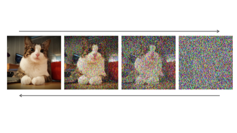

1. The forward process
Training begins with a clean image and a schedule that determines how much Gaussian noise is added at each timestep. Early steps barely disturb the image, while later steps remove nearly all recognizable structure. After enough steps, the image is transformed into something close to pure random noise. This corruption process is usually fixed in advance, which means the model does not need to learn how to break images apart. It only needs to learn how to reverse a process that we already understand mathematically.
That design choice is important. By making the forward process simple and known, the
learning problem becomes focused: given a noisy sample at time t, what
noise was added, or what clean image would have produced this state? Different
diffusion papers frame the target slightly differently, but they are all versions of
the same denoising task.
2. The reverse process

During generation, the model starts from random noise and applies the learned reverse process step by step. At each stage, the network predicts what portion of the current sample is noise, and the sampler updates the image accordingly. A single step rarely looks impressive. The power comes from accumulation. Weak local corrections produce strong global structure when repeated dozens of times.
In most popular systems, the prediction network is a U-Net with attention layers. The network sees the current noisy image, the timestep, and sometimes a text embedding. It then estimates the direction in latent space that should move the sample toward a plausible image. Sampling methods such as DDPM, DDIM, and more recent schedulers differ in how they trade off speed, randomness, and fidelity, but their underlying logic is shared.
3. Guidance and control
Classifier-free guidance
A common technique compares conditional and unconditional predictions to push the result closer to the prompt. Higher guidance can improve prompt adherence, but too much guidance often causes harsh contrast or unnatural details.
Latent diffusion
Many systems perform denoising in a compressed latent representation rather than pixel space. This lowers the computational cost while preserving enough structure to decode a detailed final image.
Structured conditions
Prompts are only one option. A diffusion model can also be guided by edge maps, depth maps, segmentation masks, or reference images, which makes the method useful for controlled design workflows.
Video: The Denoising Process
Watch how a diffusion model gradually removes noise to generate an image:
Video: How Diffusion Models Work
A visual explanation of diffusion models by 3Blue1Brown: